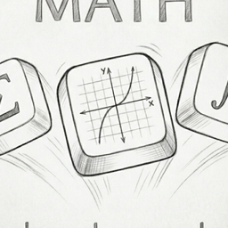

⌨️ 키보드 종류
- QWERTY — 30개 언어. 한국어, 일본어(히라가나·가타카나), 중국어 간체(핀인)·번체(주음), 유럽어, 키릴 문자, 그리스어
- MATH 키보드 (Σ) — 수학 기호와 LaTeX 명령어 전용
- PHYSICS 키보드 (⚛) — 물리 기호와 단위 전용
- 미니 키보드 — 높이 2/3, 세로로 드래그해 숨은 키 사용
- 확대 키보드 ⭐ 프리미엄 — 자판을 길게 누르면 큰 자판
수학 선생님이 직접 만든 키보드
LaTeX 명령어를 입력하면 깔끔한 수식 이미지가 되어 Word · 삼성노트 · 노션에 그대로 들어갑니다. MATH · PHYSICS 키보드, 손글씨 수식 인식, CAS 계산기, 그래프까지 키보드 하나에.
Android · 키보드 30개 언어 · 앱 화면 12개 언어

명령어 버퍼
붙여 넣으면 ↓
자동완성(⇥), 기호 참조, 숫자키 지수·첨자로 LaTeX를 빠르게.
KaTeX · MathJax 렌더링. 크기 조절과 클립보드 기록까지.
손글씨 수식을 기기 안에서 바로 LaTeX로 인식합니다.
features
\lim + ⇥ → \lim_{}{}tools
키보드 양쪽 ☰ / ⚙ 디스크를 돌려서 엽니다.
미분·적분·방정식·극한·급수·인수분해·테일러/푸리에·행렬·복소수. 풀이 과정을 보여 주고, 풀이 줄을 누르면 버퍼로.
함수 그래프와 정규분포를 그려 이미지로 붙여 넣기. Shift를 켜면 도형 그리기.
물리 · 화학 · 수학 공식 약 2,600개를 탭 한 번으로. 12개 언어.
내 이미지나 미리 만든 수학 기호를 스탬프처럼 붙이기.
키보드로 쓰거나 손가락·S펜으로 그리기. 자동 저장.
키보드에서 음악 재생, 자주 쓰는 앱 8개를 바로 전환.
videos
🆕 2026. 11. 24. 대규모 업데이트